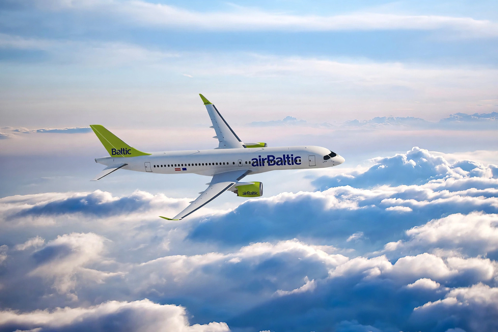

| Airbus A220 | |
|---|---|
| Manufacturer | Airbus (Airbus Canada) |
| Designer | Bombardier Aerospace |
| First flight | September 16, 2013 |
| Introduction | July 15, 2016, with Swiss International Air Lines |
| Status | In production, in service |
| Primary users | Delta Air Lines, airBaltic, JetBlue, Air France |
| Variants | A220-100, A220-300 |
The Airbus A220 is a family of five-abreast narrow-body airliners developed by Bombardier Aerospace as the Bombardier CSeries and now marketed by Airbus. The programme was launched in 2004 and the aircraft first flew on September 16, 2013. The smaller A220-100 (formerly CS100) entered service with Swiss International Air Lines in July 2016; the larger A220-300 (formerly CS300) followed with airBaltic in December 2016.

After a trade dispute in which Boeing petitioned the U.S. Department of Commerce, which proposed duties of nearly 300% on CSeries imports (later overturned by the U.S. International Trade Commission), Bombardier announced in October 2017 that Airbus would acquire a majority stake in the programme. The partnership took effect on July 1, 2018, and the aircraft was renamed the A220. Airbus acquired Bombardier's remaining stake in 2020, leaving the Quebec government as minority partner. Final assembly is at Mirabel, Quebec, with a second line at Mobile, Alabama.
The A220 seats 100–130 passengers (A220-100) or 130–160 (A220-300) in a five-abreast cabin with unusually wide seats and large windows. It is powered exclusively by Pratt & Whitney PW1500G geared turbofans and features a composite wing and fly-by-wire controls. Its fuel efficiency made it popular with airlines replacing smaller mainline jets and larger regional aircraft; airBaltic became the first airline to operate an all-A220 fleet.
Delta Air Lines is the largest customer overall; other major operators include JetBlue, Air France, Swiss, Korean Air, Air Canada and Egyptair. More than 900 A220s had been ordered by the mid-2020s.